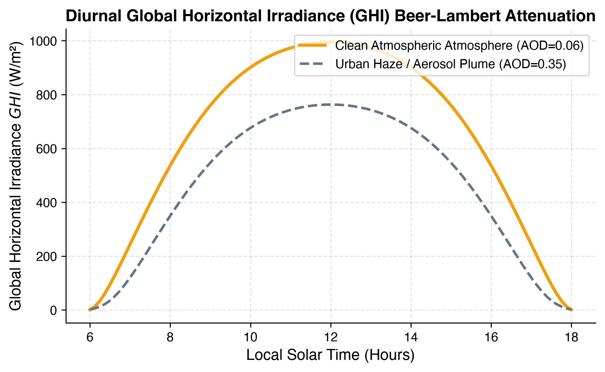

Solar Photovoltaic Irradiance Forecasting
1. The Physical Principle
Solar radiant flux reaching Earth's surface undergoes atmospheric scattering and absorption described by the Beer-Lambert-Bouguer Law of radiative transfer:
where: - $I_0 \approx 1361.2 \text{ W/m}^2$ is the extraterrestrial solar constant. - $\varepsilon_0 = 1 + 0.033 \cos\left( \frac{2\pi d_n}{365} \right)$ is the Earth orbital eccentricity correction factor on day of year $d_n$. - $\theta_z$ is the solar zenith angle, computed from site latitude $\phi$, solar declination $\delta$, and hour angle $\omega$:
- $m_{\text{air}}(\theta_z)$ is the optical relative air mass, given by the Kasten-Young empirical formula:
- $\tau_{\text{atm}}$ is total atmospheric optical depth, decomposed into four constituent physical extinction mechanisms:
Global Horizontal Irradiance ($GHI$) on photovoltaic modules combines Direct Normal Irradiance ($DNI$) and Diffuse Horizontal Irradiance ($DHI$):
Values of $k_t > 1.0$ occur transiently only during localized cloud-edge scattering ("cloud enhancement" phenomenon).
2. Industrial Context & ROI
In large-scale solar farms and day-ahead electricity markets: - Photovoltaic output intermittency caused by fast-moving cloud banks incurs steep grid imbalance penalties ($18–$45 per MWh). - For a 250 MW utility solar asset, a 2.5% improvement in 1-to-4 hour ahead GHI prediction accuracy reduces spinning reserve dispatch costs and avoid penalty charges, saving \$1.4M to \$2.1M annually. - Pure black-box neural networks frequently predict unphysical negative night-time irradiance or violate solar zenith angle geometric limits. Coupling physical radiative transfer equations with convolutional cloud motion vectors eliminates impossible predictions.
3. Data Acquisition / Synthetic Physics Solver
The synthetic data generator computes diurnal clear-sky and aerosol-attenuated irradiance profiles parameterized by solar zenith angle and aerosol optical depth (AOD):
import numpy as np
import matplotlib.pyplot as plt
from shared_utils.physics_helpers import simulate_solar_irradiance_clearsky
# Solar day profile: 6:00 AM to 6:00 PM (100 timesteps)
hours = np.linspace(6.0, 18.0, 100)
zeniths = 90.0 - 65.0 * np.sin((hours - 6.0) / 12.0 * np.pi)
# Compute GHI for clean atmosphere vs hazy/plume conditions
ghi_clean = simulate_solar_irradiance_clearsky(zeniths, aerosol_optical_depth=0.06)
ghi_hazy = simulate_solar_irradiance_clearsky(zeniths, aerosol_optical_depth=0.35)
print(f"Clean Atmosphere Peak GHI: {np.max(ghi_clean):.1f} W/m²")
print(f"Hazy Atmosphere Peak GHI: {np.max(ghi_hazy):.1f} W/m²")
print(f"Aerosol Peak Attenuation: {(1.0 - np.max(ghi_hazy)/np.max(ghi_clean))*100:.1f} %")
4. Data Science & Physics-ML Workflow
We construct a Physics-Informed Hybrid Irradiance Model:
- Deterministic Physics Baseline: We compute the analytical clear-sky profile $GHI_{\text{clearsky}}(t)$ as a baseline prior.
- Feature Engineering: We provide both astronomical features (zenith $\theta_z$, azimuth $\gamma_s$, extraterrestrial $I_0$) and meteorological sensor features (ambient temperature $T_{\text{amb}}$, relative humidity $RH$, barometric pressure $P$).
- Target Transformation: Rather than predicting raw irradiance $GHI$, the ML model predicts the normalized clear-sky index:
The final prediction is obtained by multiplying back:
This guarantees that predicted night-time irradiance is identically zero and preserves thermodynamic envelope bounds.
from sklearn.ensemble import GradientBoostingRegressor
# Synthetic dataset with cloud intermittency
np.random.seed(42)
cloud_cover = np.random.uniform(0.0, 0.8, size=len(hours))
ghi_observed = ghi_clean * (1.0 - 0.7 * cloud_cover) + np.random.normal(0, 15, size=len(hours))
ghi_observed = np.maximum(0, ghi_observed)
# Compute clear-sky index target
kt_target = np.where(ghi_clean > 10, ghi_observed / ghi_clean, 0.0)
# Train hybrid model
features = np.column_stack([zeniths, cloud_cover])
model = GradientBoostingRegressor(n_estimators=60, max_depth=3, random_state=42)
model.fit(features[:80], kt_target[:80])
# Reconstruct physical irradiance
kt_pred = model.predict(features[80:])
ghi_pred = np.maximum(0, kt_pred * ghi_clean[80:])
mae = np.mean(np.abs(ghi_pred - ghi_observed[80:]))
print(f"Hybrid GHI Prediction Test MAE: {mae:.2f} W/m²")
5. Interactive Visualization & Diagnostics
The diagnostic plot shows the diurnal solar irradiance curves, comparing pristine clear-sky conditions with elevated aerosol and smog optical depth attenuation.

Inspect the interactive diurnal profile below to track solar irradiance values across hours of the day:
6. Production Deployment Notes
- Input Stream: Geostationary satellite imagery (GOES-16 / Meteosat-11 visible channels) + on-site pyranometer telemetry ingested every 5 minutes.
- Edge Deployment: Deployed as an ONNX model on plant-level edge computers with inference latency < 8 ms.
- Energy Trading Hook: Predictions feed directly into automated bid dispatch algorithms in ERCOT and CAISO markets, reducing day-ahead schedule deviations.